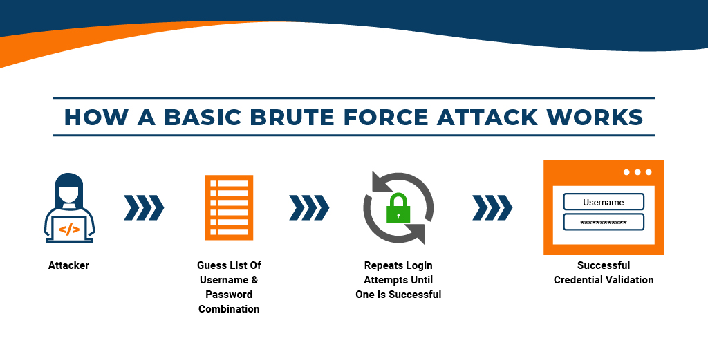

A brute force attack is a type of hacking that employs trial and error
to crack passwords, login credentials, and encryption keys. It is a simple
yet dependable method for gaining unauthorised access to individual accounts
as well as systems and networks of organisations.
The hacker tries a variety of usernames and passwords,
frequently using a computer to test a large number of combinations
until they find the correct login information.
The term "brute force" refers to attackers
who use excessive force to gain access to user accounts.
